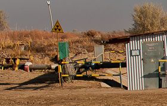

La radioactivité: un danger latent du Kazakhstan
Le sous-sol du Kazakhstan regorge de ressources minérales et l’uranium en fait partie. Ainsi, à l’époque soviétique l’exploitation de ce minerai était assez intense et il existe aujourd’hui des carrières a ciel ouvert, souvent abandonnées et tout a fait accessibles à qui passe par là. Bien que l’uranium dans sa forme naturelle ne présente pas un danger majeur pour la sante, il peut y avoir d’anciennes installations d’enrichissement aux alentours qui elles présentent des risques plus sérieux.
Un jour nous nous sommes abrité dans une de ces ruines, étant la seul source d’ombre des kilomètres aux alentours. Nous avons appris le lendemain de la bouche des locaux que ce site malgré l’intervention d’une équipe japonaise de décontamination, recelait encore un taux de radioactivité supérieur à la limite autorisé.
A noter aussi que de nouveaux gisements exploités par des entreprises étrangères, notamment françaises existent sur le territoire. Le procédé d’extraction consiste, en gros, à injecter de l’acide dans le sous-sol pour dissoudre l’uranium et de pomper la solution obtenue jusqu’à la surface pour la retraiter et extraire le minerai. Ces exploitations se présentent donc sous la forme de tuyaux qui s’enfoncent dans le sol. Rien de bien dangereux en soi si vous passez dans les environs: pas de poussières projetées, pas de vapeurs douteuses. Cependant par mesure de précaution nous vous conseillons de ne pas boire l’eau à proximité de ces sites d’extractions.
Un autre point important hérité de l’époque soviétique : les explosions nucléaires. Le Kazakhstan disposes de plusieurs sites où des tests nucléaires ont été effectues. Les plus denses se trouvent près de la ville de Semey, au nord est du pays, mais il en existe d’autres, un peu partout. Les différents tests pratiques jusqu’en 1990 ont été recensés sur un fichier Google Earth que nous avons attaché à ce billet.